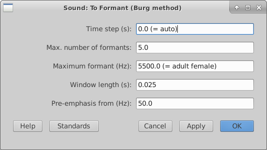

Week 8: Recap
1 Types of Objects
Praat contains several types of Objects. You can perform different actions on these objects, as long as you are selecting them.1.1 String lists
A Strings list contains a set of string elements, which can refer to file names or tokens. You can create them in several ways:- When you use the Create Strings as file list... command, your list of strings will be the file names that you store in a certain folder. By doing this you can open multiple sound files (for instance, .wav files) in one go. A crucial advantage of this is that you can run a for loop on a Strings list with file names and perform a bunch of other actions on each one of these files, one after another.
- When you use the Create Strings as tokens option you can make a Strings list with whatever Strings you like. In weeks 6 and 7 we used such a strings list in order to feed it to a TextGrid, but this is just one of many potential uses.

1.2 Sounds
You can load the following types of Sound files to Praat:
- .wav
- .aiff or .aifc
- .nist
- .flac
- .mp3
- .au
You can also create Sound files, either by using a formula (see week 2) or by recording something yourself (you can go to the Objects window and then select New > Record mono sound. Other options include creating pure tones, vowels using the VowelEditor, and synthesizing speech, among other possibilities. They can be accesed by going to the Objects window and then select New > Sound.
1.3 TextGrids
A TextGrid is a text file (you can open them with a text editor) containing time stamps and labels. However, when you create a TextGrid for a Sound object in Praat and then open both together with the View & Edit option, you can see and edit a TextGrid as you listen and look at the oscillogram and spectrogram of that file. You can edit a TextGrid by adding Tiers of information (e.g. a phone tier, a word tier, a syllable tier, etc), boundaries (i.e. mark the start and end times of a word/segment), and labels for each interval (whatever is between two boundaries). You can add IPA symbols to the TextGrid as well; newer versions of Praat come with a handy-dandy chart of phonetic symbols that you can click on. Likewise, you can query a TextGrid and obtain information from it regarding Tiers, intervals, labels, times, etc. When you select a TextGrid object in Praat you can see the range of options available for you.

1.4 Spectrograms
Spectrograms are just images; you can create a Spectrogam object from a Sound object by selecting it and then going to Analyse Spectrum > To Spectrogram. Other than drawing it to the Picture window, querying/analysing a slice, and synthesizing it, it is not a very versatile Object (you can modify it with a formula, but the possibilities are a bit limited).

1.5 Formants
Formants are Objects that you can create from a Sound object by going to Analyse Spectrum > To Formant (burg). The default settings are usually OK for most purposes, but you do need to change the Maximum frequency to 5500 Hz for female voices and 5000 Hz for male voices. Since Formant objects are just a bunch of numbers and time stamps, you can't visualize them unless you draw them on the Picture window (as we did on Week 3; you can do this manually by selecting a Formant object, then Draw > Speckle). However, you can modify the bandwidths and frequencies of a Formant object with a formula.

There are many more types of Objects (Matrices, Tables, Tiers, Pitch, Intensity, KlattGrid...) and we will see some of these in the following sessions. Of course, the kind of Praat Objects that you get to learn about are intimately related to your research interests, so this course will cover only the very essentials.
Quick exercise: Make sure that you can create these objects manually on Praat.
2 Elements of Praat scripting
2.1 Defining variables
In Praat you can create string and numeric variables. While the former store strings and can be defined by giving it a custom name followed by a dollar sign, the latter store numbers and do not need any symbol. Hence:
favoriteanimal$= "penguins"
luckynumber= 2
appendInfoLine: "There are ", luckynumber, " ", favoriteanimal$, " in this photo."
However, you can't name variables using capital letters at the beginning. Initial caps are also not allowed.
Quick exercise: Create a string variable named dir$ with the path to your desktop. Make the Info window print it.
2.2 For-loops
For-loops are arguably the best thing (tied with Procedures, which we will see later on) about Praat: it allows you to perform the same operation over a set of objects.
clearinfo
appendInfoLine: "Once upon a time, there were three siblings:"
siblings= Create Strings as tokens: "Yakko, Wakko, Dot", ", "
numOfSibs = Get number of strings
for i to numOfSibs
sib$= Get string: i
appendInfoLine: sib$, "is sibling number ", i, "."
endfor2.3 Conditions
You can add a condition (also called if-statement) within a loop. You can create a more complex decision tree by using elsif and else.
clearinfo
appendInfoLine: "Once upon a time, there were three siblings:"
siblings= Create Strings as tokens: "Yakko, Wakko, Dot", ", "
numOfSibs = Get number of strings
for i to numOfSibs
sib$= Get string: i
appendInfoLine: sib$, " is sibling number ", i, "."
if sib$= "Dot"
pronoun$= "she"
else
pronoun$="he"
endif
appendInfoLine: "and ", pronoun$, " is very funny."
endforQuick exercise: Create an if-statement that prints the numbers between 2 and 10, but in addition it appends the string "But a special number is " before number 7.
2.4 Comments
There are two ways of adding comments to a Praat script, but we have only seen one: the hash (#) symbol. You may also use a semicolon (;) but the recommended usage of the semicolon is for commenting out script lines that you may use later anyway; the # may be used for explaining what different parts of your script do.
clearinfo
appendInfoLine: "Once upon a time, there were three siblings:"
#this is a Strings list with the Warner siblings
siblings= Create Strings as tokens: "Yakko, Wakko, Dot", ", "
numOfSibs = Get number of strings
#this is a for-loop
for i to numOfSibs
sib$= Get string: i
appendInfoLine: sib$, " is sibling number ", i, "."
#this is an if-statement for pronouns. It doesn't hurt if I leave it uncommented
if sib$= "Dot"
pronoun$= "she"
else
pronoun$="he"
endif
; appendInfoLine: "And ", pronoun$, " is very funny."
endfor
appendInfoLine: "And they were very funny."2.5 "Stringification" of numeric variables
If you want to print a string and a numeric variable together, you might need to "stringify" your numeric variable. For instance, here I want to create three sine waves of 1, 2, and 3 seconds and want to name them tone1, tone2, and tone3, respectively:
for i to 3
#The "tone" + string$(i) part is the name of each Sound
Create Sound from formula: "tone" + string$(i), 1, 0, i, 44100, "1/2 * sin(2*pi*377*x) "
Play
endfor2.6 Object selection
As we have stated several times throughout the course, Praat performs actions only on selected Objects. If you are going through a for-loop that creates new Objects, you need to tell Praat to come back to where it was.
for i to 3
sound= Create Sound from formula: "tone" + string$(i), 1, 0, i, 44100, "1/2 * sin(2*pi*377*x) "
To TextGrid: "tone", ""
Set interval text: 1, 1, "tone" + string$(i)
#Now I must add this line, or the Sound won't play
selectObject: sound
Play
endfor2.7 Removing objects
Each Praat window has a different way of removing elements. If you would like to remove a drawing from the Picture window, you need to go to the Picture window menu and choose Edit > Erase all. Likewise, this can be done from a script by using the line Erase all.
If you want to clear the Info window, you can go to the corresponding menu and choose File > Clear. You can also script it by using the line clearinfo.
Finally, you can also remove an object from the Objects window. You can just select the Object(s) and hit the Remove button at the bottom. Or, you can use removeObject: in your script. If you would like to remove all your elements from the Praat Objects window, you could use:
#Seriously: this is a terrible idea
select all
RemoveBut this is a terrible idea, since it will remove EVERYTHING; even the Objects that were there before those created by your script. You can use it when a script creates Objects repeatedly.
Quick exercise: Create a script that opens the files in the palabras folder via Strings list, and removes everything except the strings list. Make sure to run the removing part later, or you won't see anything happening at all!
2.8 String functions and regular expressions
Whe we work with strings, we can use either the built-in string functions in Praat, or regular expressions. Both can help us to find patterns in strings. For instance, imagine having a long list of sound files with recordings from male and female voices, all of which you have conveniently named with an "m" or an "f" at the beginning (here I just added the "m" and "f" to the files in the samples folder), and we want to measure vowel formants according to their sex. Let's try a string function first:
#we create a strings list with file names
dir$= "/home/fernenri/Desktop/samples/"
files= Create Strings as file list: "fileList", dir$ + "*.wav"
nofiles= Get number of strings
#we make a for-loop with a condition
for i to nofiles
name$= Get string: i
Read from file: dir$ + name$
if left$ (name$, 1) = "f"
To Formant (burg): 0, 5, 5500, 0.025, 50
else
To Formant (burg): 0, 5, 5000, 0.025, 50
endif
selectObject: files
endforEntering a condition of the type if left$ (name$, 1) = "f" allowed us to assign different maximum formant values to male and female voices: the string function used was left$(a$, n), where a$ stands for the string in question, and n stands for the number of characters at the left edge of your string that you want to check. You can access the list of available string functions by going to the Objects window and then Help > Search Praat manual... and type string functions in the box.
You can achieve the same by using the following regular expression: "^f". If you replace line 9 above with if index_regex (name$, "^f"), you'll get the same result. Again, you can access the list of regular expressions by going to the Objects window and then Help > Search Praat manual... and type regular expressions in the box.
3 Commands
We are calling commands any line of code that performs an action on an Object, although this might not be a very accurate name. These actions can be found also when you use the buttons in the Objects window. Most of them take several arguments (again, might not be a very accurate name), that is, extra information on the parameters of the action. For instance:
#We get the duration of a given sound
dur= Get total duration...takes no arguments; you just need write that down and that's all. But:
#we create a strings list with file names
files= Create Strings as file list: "fileList", "/home/fernanda/Desktop/palabras/"Some other commands do take arguments. In the case above, we need to give a name to the Strings list, and a path to a folder.
#We create a Formant object from a Sound
To Formant (burg): 0, 5, 5500, 0.025, 50...And if we wanted to create a Formant object we will need to provide a lot of information: the time steps in seconds, the maximum number of formants, the Maximum formant in Hz, the window length, and the pre-emphasis. Remember that whenever you can't remember the arguments you can always perform the desired option by clicking; the line above is just the same as clicking on the following window:
4 The Picture window
Finally, the Picture window is a world in itself. If you are proficient with a program that produces highly customizable graphs such as R, then you probably won't need the Picture window at all. However, let's bear in mind the following:
- Many Praat Objects can be drawn or painted on this window; when you select an Object, see if a Draw... or Paint... button shows up.
- Before you draw anything, make sure that the window is clear (see 2.7 above), and that the viewport (the pink/blue box) is selecting the desired area; you can choose the drawing area with the mouse or by scripting, in which case you will need to use the coordinate system described in Week 2.
5 Homework
This week you don't need to send anything as a homework, unless you'd like to resubmit a homework that you couldn't figure out at first. In that case, do let me know what the problem was (either by email or the forum) so I can give you some extra hints, and send by email.